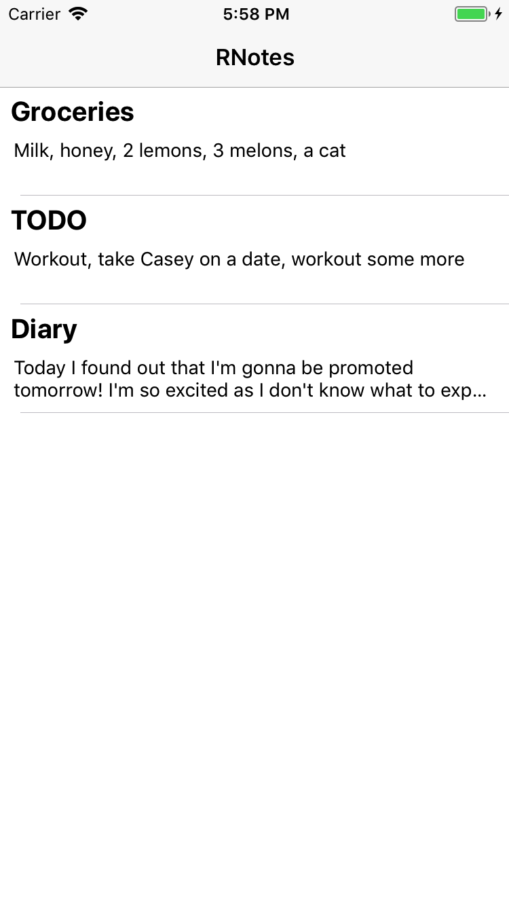
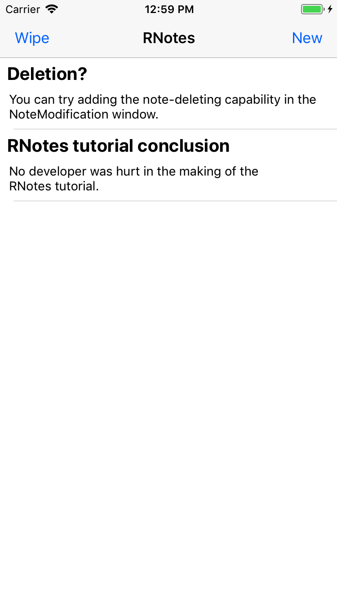

Tutorial: Simple note taking app
Welcome to our first introductory tutorial to the Reactant architecture.
First and foremost, prerequisites:
- Xcode (AppCode might work as well, but it’s not tested),
- Terminal,
- Cocoapods dependency manager.
The whole project can be found on GitHub here.
In this particular tutorial we’ll create a small (but useful) application for writing notes and saving them for future use, allowing you to wipe them if you so please.
Let’s get started.
Setting Up the Project
There are many ways to go about creating a new Reactant project. Creating it by hand can be overwhelming at first, so we’re using Reactant CLI to create it for us this time.
After following instructions in Reactant CLI repo’s README you’ll be equipped with a very valuable tool for creating new Reactant projects.
How to create a project using Reactant CLI:
- select a root folder (project folder will be created automatically in it)
- type the following:
reactant init
into the Terminal.

- wait for Cocoapods to do its job bringing in the dependencies
Xcode workspace should open after this if everything went smooth. If it doesn’t, open it manually, the suffix is .xcworkspace
Click the RUN button ( ) so that we see what we’ve got so far. We’re doing this step mainly to check if nothing went wrong. You should get Hello World! text on white background. If you don’t, consider visiting the Troubleshooting Tips section.
) so that we see what we’ve got so far. We’re doing this step mainly to check if nothing went wrong. You should get Hello World! text on white background. If you don’t, consider visiting the Troubleshooting Tips section.
There are two Xcode projects in the left sidebar. The first is our project (RNotes in this case) and the second is Pods, our dependencies lie there.
Open our new project folder by clicking the arrow to the left of RNotes. We are going all the way through folders called Application -> Sources. Our project won’t be large, so open all the subfolders for better navigation later on.
Preparing The Insides
Model
Models is the folder for our MODELs. These include struct, enum, protocol or class types that we use everywhere else in our program.
RNotes will need a MODEL of its own. We’ll create a new file Note.swift (by clicking right on the Models folder and choosing New file... and selecting Swift file, we’ll only use these from now on) and a struct inside it named Note.
struct Note {
let id: String
var title: String
var body: String
}
That’s it for the MODEL in this app for now.
Controller
Moving on to the MainController file. ControllerBase is what any Controller will be subclassing. The first generic parameter (between the < and >) is for componentState, the second for this controller’s RootView. Please make sure that for this Controller the second generic parameter is MainRootView.
Passing information to RootView is done by setting RootView's componentState. This is usually done in update() method, as it’s called every time componentState changes (if the componentState is Void, update() is called automatically only once at the beginning).
We don’t have any notes ready, so we need to create some from scratch and pass them to the RootView.
import Reactant
final class MainController: ControllerBase<Void, MainRootView> {
override init() {
super.init(title: "RNotes") // setting the title of our main page
}
override func afterInit() {
let notes = [
Note(id: "1", title: "Groceries", body: "Milk, honey, 2 lemons, 3 melons, a cat"),
Note(id: "2", title: "TODO", body: "Workout, take Casey on a date, workout some more"),
Note(id: "3", title: "Diary", body: "Today I found out that I'm gonna be promoted tomorrow! I'm so excited as I don't know what to expect from the new job position. Looking forward to it though.")
]
rootView.componentState = notes
}
}
Doing so we passed the notes we prepared in advance to the RootView. Right now Xcode will report an error saying that [Note] and Void are incompatible. Let’s head over to a file called MainRootView and fix it.
RootView
We can see Reactant CLI generated a class for us that we will use as our RootView.
We’ll mark MainRootView as RootView and add a PlainTableView as a field to keep our notes organized.
import Reactant
import RxSwift
final class MainRootView: ViewBase<[Note], PlainTableViewAction<NoteCell>> {
let noteTableView = PlainTableView<NoteCell>(reloadable: false)
override var actions: [Observable<PlainTableViewAction<NoteCell>>] {
return [noteTableView.action]
}
}
The actions array of Observable sequences is used as a means to communicate with Controller that a certain action took place. Here it’s used only to propagate user’s interaction with the table view.
NOTE: PlainTableViewAction is an enum that sends either .selected(CELL.StateType), .refresh or .rowAction(CELL.StateType, CELL.ActionType). We’ll cover what actions are in more detail in a second.
We also need to update the noteTableView every time MainRootView's componentState changes. That’s what update() method is for.
// inside MainRootView
override func update() {
noteTableView.componentState = componentState.isEmpty ? .empty(message: "You have no notes so far!") : .items(componentState)
}
The .items is a part of CollectionViewState<MODEL> enum. After passing an array of MODEL, Reactant.TableView automatically creates a table view.
Having done that, we can customize our noteTableView a bit in loadView(). Add the following function.
// inside MainRootView
override func loadView() {
noteTableView.footerView = UIView() // this is so that cell dividers end after the last cell
noteTableView.rowHeight = NoteCell.height
noteTableView.separatorStyle = .singleLine
noteTableView.tableView.contentInset.bottom = 0
}
NOTE: For more TableView variants see Reactant’s TableView classes.
Now we have a PlainTableView, but we still haven’t created the cell we want to populate it with, NoteCell.
Creating new file in the Main folder and choosing Swift file. You can name the file however you want, though it’s good practice to always name it after the class that’s going to reside in the file.
import UIKit
import Reactant
final class NoteCell: ViewBase<Note, Void> {
static let height: CGFloat = 80
}
This is the declaration of our cell. It’s good practice to explicitly set the height of your table cell. Next we need to add some labels that will tell us what the note is about without us tapping on it.
// inside NoteCell
let title = UILabel()
let preview = UILabel()
override func update() {
title.text = componentState.title
preview.text = componentState.body
}
NOTE: We’re using 2-space tabs in these short snippets to achieve better readability. If you want to inspect the code in full, the project can be found here. Pasting the code to Xcode from the snippets should automatically convert indentation to your preferred size, if it does not, use Ctrl+I on selected code to indent it correctly.
The update() method gets called every time componentState is modified. componentState is the single mutable state of any Component. Ideally there should be no more var fields in the component, only the componentState should be mutable. The type of componentState is defined as the first generic parameter (between the < and >), you can see that it’s Note here.
Inside update() and only there you should read componentState. If you try reading from it before anything is set in there, the app crashes.
As you can see, here we are using componentState to update the view based on the MODEL we receive. Note has title and body fields and we copy those into the UILabel views.
ADVANCED: If, for some reason, you don’t want the update() method called, overriding method needsUpdate() gives you that control. Returning false from needsUpdate() means that update() doesn’t get called when componentState is modified, default is true.
Second, the loadView() method. In this method you should setup your view and add subviews if you don’t add them through ReactantUI. It gets called only once after afterInit().
We are using children(_:) which also comes from Reactant to conveniently add all the subviews. Keep in mind that views added first will be under the views added last.
NOTE: Even though Reactant’s methods are overridden, calling super.method() is not needed.
Layouting
ReactantUI uses what AutoLayout offers in a pretty straightforward way. You can either use anonymous components or connect your UI to your code giving you even more control over the component.
Open file MainRootView.ui.xml, we’re going to be doing a few changes. The Label with “Hello World!” is redundant in our case, but we do need to layout our noteTableView.
<?xml version="1.0" encoding="UTF-8" ?>
<Component
xmlns="http://schema.reactant.tech/ui"
xmlns:layout="http://schema.reactant.tech/layout"
xmlns:xsi="http://www.w3.org/2001/XMLSchema-instance"
xsi:schemaLocation="http://schema.reactant.tech/ui https://schema.reactant.tech/ui.xsd
http://schema.reactant.tech/layout https://schema.reactant.tech/layout.xsd"
rootView="true">
<View
field="noteTableView"
layout:edges="super" />
</Component>
First thing you’ll notice is that there’s a lot of complex text in the header. That’s actually defining the component you’re creating right now, that’s why the file ends with </Component> and every ui.xml file has to have this structure (except for the rootView="true" if you don’t want the view to be a RootView).
Now create another file. For this one select Empty as file type, its name should be identical to the file you created for NoteCell but with the file suffix ui.xml – NoteCell.ui.xml.
Copy the header from MainRootView.ui.xml, don’t forget to add the ending </Component> as well. We’re going to change the header a bit because NoteCell shouldn’t take up the whole screen, so we’ll get rid of
rootView="true"
in the header.
Next up, let’s define how our cells should look like.
Our NoteCell is going to have Title on top and Preview of the note right under it. The Preview is going to be at most 2 lines long, Title only 1.
<?xml version="1.0" encoding="UTF-8" ?>
<Component
xmlns="http://schema.reactant.tech/ui"
xmlns:layout="http://schema.reactant.tech/layout"
xmlns:xsi="http://www.w3.org/2001/XMLSchema-instance"
xsi:schemaLocation="http://schema.reactant.tech/ui https://schema.reactant.tech/ui.xsd
http://schema.reactant.tech/layout https://schema.reactant.tech/layout.xsd">
<Label
field="title"
font=":bold@20"
numberOfLines="1"
layout:leading="super inset(8)"
layout:trailing="super inset(8)"
layout:top="super inset(6)" />
<Label
field="preview"
font="14"
numberOfLines="2"
layout:fillHorizontally="super inset(10)"
layout:below="title offset(8)"
layout:bottom=":lt super inset(6)" />
</Component>
The layout: prefix is used for layouting attributes. Others are used to directly change the attributes of the element you are creating.
Saving the file at any time (assuming the XML is syntactically and semantically correct) will update the screen on your simulator to represent the UI XML.

Creating New Notes
We need to create a new Controller and RootView for editing notes. It can be named NoteModificationController.swift and NoteModificationRootView.swift for example. NoteModificationRootView.ui.xml will be needed as well.
NoteModificationController.swift should look like this:
import Reactant
final class NoteModificationController: ControllerBase<Note, NoteModificationRootView> {
struct Properties {
let title: String
}
private let properties: Properties
init(properties: Properties) {
self.properties = properties
super.init(title: properties.title)
}
override func update() {
rootView.componentState = componentState
}
}
Properties takes over the information that is used to setup a Controller in some way (i.e. there should only be constants). This makes it easier to change the fields later on as they are grouped and you don’t have to think about changing the init() parameters.
NoteModificationRootView.swift should have this structure:
import Reactant
import RxSwift
enum NoteModificationAction {
case titleChanged(String)
case bodyChanged(String)
}
final class NoteModificationRootView: ViewBase<Note, NoteModificationAction> {
let titleTextField = TextField()
let bodyTextView = UITextView()
override var actions: [Observable<NoteModificationAction>] {
return [
titleTextField.rx.text.skip(1).replaceNilWith("").map(NoteModificationAction.titleChanged),
bodyTextView.rx.text.skip(1).replaceNilWith("").map(NoteModificationAction.bodyChanged),
]
}
override func update() {
titleTextField.text = componentState.title
bodyTextView.text = componentState.body
}
}
We’re using the second generic parameter here to denote our own action. It’s used when declaring actions array.
NOTE: We can move to previewing the new file by pressing Cmd+D inside the Simulator (this opens up a ReactantUI debug menu) and tapping Preview...
The insides of NoteModificationRootView.ui.xml should look like this:
<?xml version="1.0" encoding="UTF-8" ?>
<Component
xmlns="http://schema.reactant.tech/ui"
xmlns:layout="http://schema.reactant.tech/layout"
xmlns:xsi="http://www.w3.org/2001/XMLSchema-instance"
xsi:schemaLocation="http://schema.reactant.tech/ui https://schema.reactant.tech/ui.xsd
http://schema.reactant.tech/layout https://schema.reactant.tech/layout.xsd"
rootView="true">
<TextField
field="titleTextField"
font="bold@24"
placeholder="Title"
layout:fillHorizontally="super inset(24)"
layout:top="super inset(24)" />
<TextView
field="bodyTextView"
font="16"
layout:fillHorizontally="super inset(20)"
layout:below="titleTextField offset(20)"
layout:bottom="super inset(24)" />
</Component>
Now we have another screen ready, but we have no way to go from the main screen to here. This leads us to an introduction to Wireframes.
Wireframe's main purpose is to switch between controllers based on Reactions they call. It takes care of navigation as well as providing Dependencies to the controllers.
You can find the MainWireframe.swift we’ll be working with in the Wireframes folder.
The entrypoint() method should be the only public one and shouldn’t return a specific type of controller, but UIViewController (ViewBase is subclassed from it).
Under it we can see main() method. It’s methods like this one that we will be implementing and each of these will return a specific type of controller.
Let’s start with noteModification(note:).
// inside MainWireframe
private func noteModification(note: Note?) -> NoteModificationController {
return create { provider in
let properties = NoteModificationController.Properties(title: note?.title ?? "New Note")
return NoteModificationController(reactions: reactions, properties: properties)
.with(state: note ?? Note(id: UUID().uuidString, title: "", body: ""))
}
}
.with(state:) is a method that can be called on any Reactant component. As you can see, it’s a very convenient way to set the initial componentState. As of now it’s not possible to require the componentState to be set initially at compile time with this method. A workaround for this is to add initialComponentState field to the controller’s Properties.
NOTE: We are using UUID to generate IDs of our Notes, it will later be invaluable if we wish to not have conflicts in our saved notes.
Then we need to modify main() so that we can begin editing a note (or create a new one).
// inside MainWireframe
private func main() -> MainController {
return create { provider in
let reactions = MainController.Reactions(
newNote: {
provider.navigation?.push(controller: self.noteModification(note: nil))
},
modifyNote: { note in
provider.navigation?.push(controller: self.noteModification(note: note))
})
return MainController(reactions: reactions)
}
}
Now that we have Wireframe pushing controllers when user decides to create a new or modify old note, we need to add such support to MainController.swift.
Adding this snippet will create a button on the right side of the navigation bar and tapping on it will call our reaction.
// inside MainController's afterInit() method
navigationItem.rightBarButtonItem = UIBarButtonItem(title: "New", style: .plain) { [reactions]
reactions.newNote()
}
But the user might as well tap a note that is already created, for that we will use the act(on:) method.
// inside MainController
override func act(on action: PlainTableViewAction<NoteCell>) {
switch action {
case .selected(let note):
reactions.modifyNote(note)
case .refresh, .rowAction(_, _):
break
}
}
act(on:) allows the controller to do something every time RootView emits an action either through the actions observable or using the perform(action:) method.
This concludes our transitioning to editing/creating notes and returning back (navigation controller takes care of returning for us). However we still do not have note-saving capability, everything returns to the same state as it was before the moment we leave the editing screen. That leads us to the next part.
Saving Our Notes
Any type of a request for data should be going through Services. We’re going to only save our notes locally, although this abstraction allows you to switch saving and loading from UserDefaults to the cloud only changing the Service, nothing else.
We’ll create only one service, because our application is not very big, but there are usually many Services, just as there are plenty of Wireframes.
First of all, we need to make sure our Note can be serialized and deserialized. All we need to do is make Note conform to Codable, Swift takes care of everything else.
struct Note: Codable { // Note internal structure follows
Having done that, create a new file NoteService.swift in the Services folder. Add this code inside:
final class NoteService {
private let encoder = JSONEncoder()
private let decoder = JSONDecoder()
func loadNotes() throws -> [Note] {
guard let data = UserDefaults.standard.data(forKey: "notes") else { return [] }
return try decoder.decode(Array<Note>.self, from: data)
}
func save(note: Note) throws {
var notes = try loadNotes()
if let index = notes.index(where: { $0.id == note.id }) {
notes[index] = note
} else {
notes.append(note)
}
try save(notes: notes)
}
private func save(notes: [Note]) throws {
let data = try encoder.encode(notes)
UserDefaults.standard.set(data, forKey: "notes")
}
func deleteNotes() throws {
try save(notes: [])
}
}
We also need to modify DependencyModule.swift to contain our newly created service.
protocol DependencyModule {
var noteService: NoteService { get }
}
Likewise, the ApplicationModule.swift which conforms to this protocol needs to create a NoteService to be used as a dependency.
final class ApplicationModule: DependencyModule {
let noteService = NoteService()
}
Also take a moment to look at AppDelegate.swift and MainWireframe to see how ApplicationModule is passed from AppDelegate to the Wireframe.
That marks our Service as complete. We have to replace the hardcoded Note array in MainController.swift with the newly created Service.
Our MainController should look like this now:
final class MainController: ControllerBase<Void, MainRootView> {
struct Dependencies {
let noteService: NoteService
}
struct Reactions {
let newNote: () -> Void
let modifyNote: (Note) -> Void
}
private let dependencies: Dependencies
private let reactions: Reactions
init(dependencies: Dependencies, reactions: Reactions) {
self.dependencies = dependencies
self.reactions = reactions
super.init(title: "RNotes")
}
override func afterInit() {
navigationItem.rightBarButtonItem = UIBarButtonItem(title: "New", style: .plain) { [reactions] in
reactions.newNote()
}
}
override func update() {
do {
rootView.componentState = try dependencies.noteService.loadNotes()
} catch let error {
print("Failed to load saved notes:", error.localizedDescription)
}
}
override func act(on action: PlainTableViewAction<NoteCell>) {
switch action {
case .selected(let note):
reactions.modifyNote(note)
case .refresh, .rowAction(_, _):
break
}
}
override func viewWillAppear(_ animated: Bool) {
invalidate()
super.viewWillAppear(animated)
}
}
NOTE: viewWillAppear(_:) gets called every time a view is about to get shown. This is not a Reactant method, so we need to call super.viewWillAppear(_:).
We added Dependencies. This struct marks any Service classes the controller needs to function properly. The controller also needs a dependencies field which holds the passed services through init(dependencies:reactions:).
Reactions are called when something happens that should involve some Wireframe action.
NoteModificationController.swift also needs to be modified. In order to save notes correctly, we need to give it the dependency NoteService as well. It should look like this:
final class NoteModificationController: ControllerBase<Note, NoteModificationRootView> {
struct Dependencies {
let noteService: NoteService
}
struct Properties {
let title: String
}
private let dependencies: Dependencies
private let properties: Properties
init(dependencies: Dependencies, properties: Properties) {
self.dependencies = dependencies
self.properties = properties
super.init(title: properties.title)
}
override func update() {
rootView.componentState = componentState
}
override func act(on action: NoteModificationAction) {
switch action {
case .titleChanged(let title):
componentState.title = title
do {
try dependencies.noteService.save(note: componentState)
} catch let error {
print("Failed to save the note:", error.localizedDescription)
}
case .bodyChanged(let body):
componentState.body = body
do {
try dependencies.noteService.save(note: componentState)
} catch let error {
print("Failed to save the note:", error.localizedDescription)
}
}
}
}
Both of them now need their respective Dependencies structures passed from the Wireframe.
// inside MainWireframe
private func main() -> MainController {
return create { provider in
let dependencies = MainController.Dependencies(noteService: module.noteService)
let reactions = MainController.Reactions(
newNote: {
provider.navigation?.push(controller: self.noteModification(note: nil))
},
modifyNote: { note in
provider.navigation?.push(controller: self.noteModification(note: note))
})
return MainController(dependencies: dependencies, reactions: reactions)
}
}
private func noteModification(note: Note?) -> NoteModificationController {
return create { provider in
let dependencies = NoteModificationController.Dependencies(noteService: module.noteService)
let properties = NoteModificationController.Properties(title: note?.title ?? "New Note")
return NoteModificationController(dependencies: dependencies, properties: properties)
.with(state: note ?? Note(id: UUID().uuidString, title: "", body: ""))
}
}
provider is used in reactions when you need to either interact with the navigation controller or when you need a reference to the controller that will be initialized at the end of create(factory:) method.
This concludes the functionality part of this tutorial! We can still tweak the application a bit on the beauty side.
Finishing Touches
If we make the NoteCell in NoteCell.swift conform to Reactant.TableViewCell,
final class NoteCell: ViewBase<Note, Void>, Reactant.TableViewCell {
we can react to user’s tap by highlighting the cell.
// inside NoteCell
func setHighlighted(_ highlighted: Bool, animated: Bool) {
let style = { self.apply(style: highlighted ? Styles.highlightedBackground : Styles.normalBackground) }
if animated {
UIView.animate(withDuration: 0.7, animations: style)
} else {
style()
}
}
We must not forget to define the Styles.
// under NoteCell
extension NoteCell.Styles {
static func normalBackground(_ cell: NoteCell) {
cell.backgroundColor = nil
}
static func highlightedBackground(_ cell: NoteCell) {
cell.backgroundColor = UIColor.lightGray.withAlphaComponent(0.2)
}
}
The styling parts that cannot be declared using Reactant UI are defined like this. In our case (Reactant.TableViewCell) the Component has its own Styles, so we are just extending them instead of creating our own fileprivate struct.
Try to add a Wipe button in the MainController navigation bar that deletes all notes when tapped. You can then compare it to the project’s Wipe on GitHub.

Another thing that the user would surely appreciate is showing an alert controller in case loading/saving notes fails. It would probably work through letting the Wireframe know through Reactions to show an alert controller.
NOTE: You may notice that most (if not all classes) we use are marked final. If you are sure they won’t need to be subclassed in the near future, it’s good practice to mark them so, plus it helps the performance a bit.